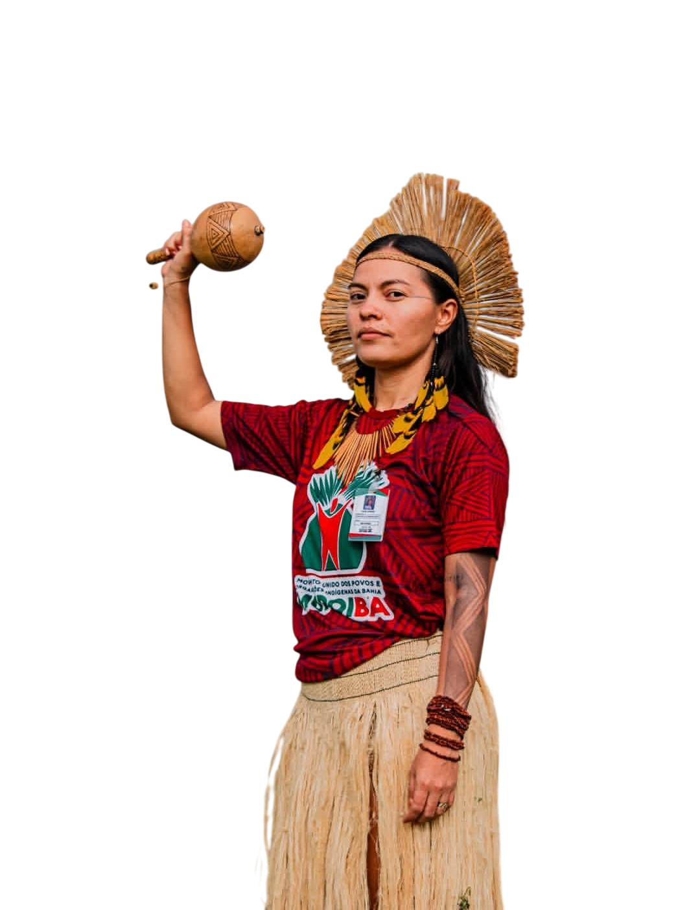

Importante líder indígena, nutricionista e comunicadora do povo Kiriri, atualmente assume papel de destaque na Funai.
Fabiana Kiriri é uma importante líder indígena, nutricionista e comunicadora do povo Kiriri, que é principalmente reconhecida por sua atuação na defesa dos direitos indígenas e na coordenação de comunicação do MUPOIBA (Movimento Unido dos Povos e Organizações Indígenas da Bahia) e por ser membra do projeto filhas da ancestralidade
tornou-se a primeira mulher indígena a assumir a Coordenação Regional da FUNAI no Baixo São Francisco.
Desde 2009, Fabiana atua em questões sociais dentro do território, participando de reuniões e debates que envolvem tanto a comunidade quanto instituições externas. Sua atuação busca alinhar as demandas atuais com os valores culturais do povo Kiriri.
econômica da aldeia é a agricultura, com destaque para o cultivo de alimentos como feijão, milho, mandioca e batata-doce.
Fabiana defende o desenvolvimento sustentável da comunidade e a geração de oportunidades de trabalho, destacando iniciativas como o apoio do FIDA e do Slow Food.
Ela reforça que ser indígena não implica inferioridade, afirmando que seu povo possui o mesmo potencial que qualquer outro para acessar educação e alcançar sucesso.
